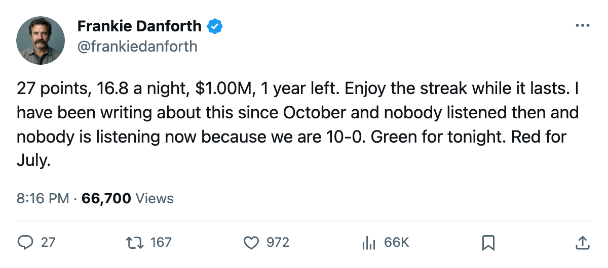
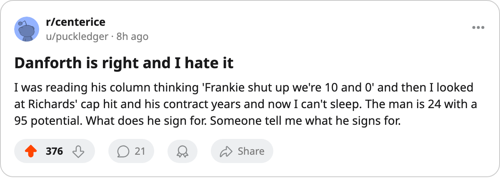

DANFORTH: 10 straight wins and the only number I care about is $1.00M
Brad Richards is outplaying his contract by every measure on the sheet, and it expires in July.
 Frankie DanforthColumnist · Queen City Telegram
Frankie DanforthColumnist · Queen City TelegramUneasy

The piece
I have been writing about the second-centre problem since October. I have been a pest about it. I have told you the roster does not have a draw-winning centre behind  Mats Sundin86 and that the fourth line is a tax on the salary ceiling and I will say it again in July when it costs us. Well,
Mats Sundin86 and that the fourth line is a tax on the salary ceiling and I will say it again in July when it costs us. Well,  Brad Richards84 is the answer. He is 24 years old, he has 27 points in 25 games, he logs 16.8 minutes a night, he carries a $1.00M cap hit, and his contract has 1 year left.
Brad Richards84 is the answer. He is 24 years old, he has 27 points in 25 games, he logs 16.8 minutes a night, he carries a $1.00M cap hit, and his contract has 1 year left.
His overall is 85. His Development Index reads +4, meaning the Bureau's form term has him above his base of 82 right now. He is the 3rd-best centre on the roster by the Book and he costs 1/8th of what Sundin costs. The  Toronto Maple Leafs Maple Leafs are 18-5-0 with 40 points and a 10-game winning streak, and he is the reason I can write the word "streak" without feeling ill.
Toronto Maple Leafs Maple Leafs are 18-5-0 with 40 points and a 10-game winning streak, and he is the reason I can write the word "streak" without feeling ill.
Here is what terrifies me. He is 24 with a potential of 88. He has 1 contract year. The  New York Rangers have 13-7-4 and 36 points. The
New York Rangers have 13-7-4 and 36 points. The  New Jersey Devils have 13-2-3 and 37 points. There are 29 other general managers in this league. Every one of them has a sheet. Every one of them can see a 24-year-old second centre putting up 27 points for $1.00M on an expiring deal.
New Jersey Devils have 13-2-3 and 37 points. There are 29 other general managers in this league. Every one of them has a sheet. Every one of them can see a 24-year-old second centre putting up 27 points for $1.00M on an expiring deal.
The July window is not a problem I can enjoy
The Toronto Maple Leafs offense right now reads 147 goals in 25 games.  Marian Gaborik95 has 34 points and a +6 on the Index at 96 overall.
Marian Gaborik95 has 34 points and a +6 on the Index at 96 overall.  Alexander Mogilny85 has 39 points at 35 years old and will be a free agent in 2 years.
Alexander Mogilny85 has 39 points at 35 years old and will be a free agent in 2 years.  Bryan McCabe81 has 35 points as a defenseman. This is a real team. It is also a team with 3 centers over $1.00M who are not Richards and none of them will get him his raise.
Bryan McCabe81 has 35 points as a defenseman. This is a real team. It is also a team with 3 centers over $1.00M who are not Richards and none of them will get him his raise.
Petr Chlup81 is 18 and has 8 points in 14 games at 82 overall with a 95 potential.  Jason Spezza71 is 21 and has 10 points in 22 games. They are not ready to play 16 minutes a night in the Northeast.
Jason Spezza71 is 21 and has 10 points in 22 games. They are not ready to play 16 minutes a night in the Northeast.  Josh Holden74 has not played. The depth behind Richards is a dream and a hope, in that order.
Josh Holden74 has not played. The depth behind Richards is a dream and a hope, in that order.
I am not going to tell you the winning streak means nothing. It means something. I watched 10 wins without checking my Panic Meter once, and I did not enjoy it. But Richards will turn 25 next summer with 27 points and an 85 overall and a $1.00M contract that says goodbye in July. I trust him. I trust the number at 16.8 mpg. I trust the 27 points. I do not trust that the man running this roster is going to find $4M or $5M to keep him.
The fourth line is still a tax. Sundin's contract has 5 more years on it. And the kid at $1.00M is playing like he belongs at $5.00M. That is the only Panic Meter reading that matters today, and it is Red for July.
Green for tonight. Six-oh over  Tampa Bay Lightning. I hated every minute of being happy about it.
Tampa Bay Lightning. I hated every minute of being happy about it.

